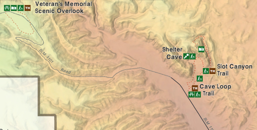
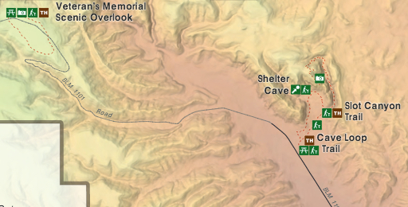

Hike New Mexico
w/ Tom & Ken
Tent Rocks Slot Canyon Trail
| Difficulty | Round-trip | Type | Elev. Chg. | Exposure | Wow Factor | Facilities | Seasons | Flickr | Get There |
|---|---|---|---|---|---|---|---|---|---|
| Medium-Easy | 3 miles | Out-and-back | 600 ft | Full sun | Slot canyon! | Picnic Area | Not Winter | Album | Directions |


 

- May 12, 2010: The path leads to the interior
- Feb 13, 2013: Layers upon layers of volcanic debris
- May 12, 2010: Winding through the slots, where will you end up?
- May 12, 2010: Various suprise formations along the way
- Sep 23, 2004: Classic formations
- May 2, 2013: Tight squeeze makes for a unique hike
- Sep 23, 2004: View while ascending
- Feb 13, 2013: The canyon and trail from above
- https://www.flickr.com/photos/139088815@N08/27623399010/in/album-72157670138528866
- https://www.flickr.com/photos/139088815@N08/27289474344/in/album-72157670138528866
- https://www.flickr.com/photos/139088815@N08/27623411870/in/album-72157670138528866
- https://www.flickr.com/photos/139088815@N08/27901935455/in/album-72157670138528866
- https://www.flickr.com/photos/139088815@N08/27825183361/in/album-72157670138528866
- https://www.flickr.com/photos/139088815@N08/27901967275/in/album-72157670138528866
- https://www.flickr.com/photos/139088815@N08/27623414810/in/album-72157670138528866
- https://www.flickr.com/photos/139088815@N08/27289135033/in/album-72157670138528866
Tent Rocks, or Kasha-Katuwe National Monument, is one of the most popular hikes in the area, for obvious reasons! It is one of the few "slot canyons" available to hikers and is easily accessible from both Albuquerque and Santa Fe. Located on the Cochiti Reservation, it is near the Cochiti Dam, not far from La Bajada trail. Owing to the steepness of the canyon walls, it can be dark if attempted early or late in the day. The trail through the canyon ascends to the top of the mesa when followed to its end, where beautiful 360-degree panoramas can be seen. Before 2001, Tent Rocks was a State Monument, and the access road was gravel - subject to flood-out and closure by the Cochiti Tribal Government. Now it can get somewhat crowded along the trail, so it is well to plan your visit accordingly. It is currently (2016), the most-visited park in the state.